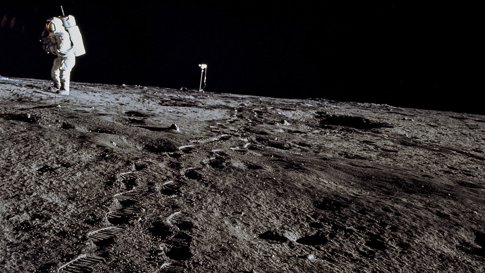

Moon Landing Hoax
The truth about what some Americans think about Apollo 11
Some people believe the moon landing of Apollo 11 was a hoax by the United States government and NASA in order to fool the American people and the world into believeing we had won the space race with Russia and successfully sent and brought bakc humans to the moon. These conspiracy theorists cite reasons such as the technology not being sufficient, strange details in photos and video, and other strange occurrences and hints to make their case.

On the other hand, there are those that believe the moon landings did in fact occur. This may be due to their existence at the time of the moon landings and knowing a little bit more about what we were actually capable of then. In addition, they could be influenced by US nationalism and pride in their country during the Cold War. Finally, these people are not under the impression that NASA would lie or cover up this information to the people.